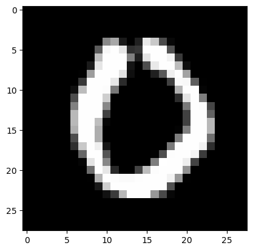
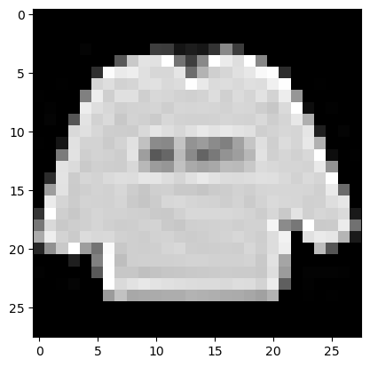
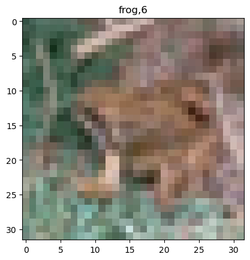

import torch
import torchvision
import matplotlib.pyplot as plt
import pandas as pd
from fastai.data.all import *
from fastai.vision.all import *
import fastaiMNIST CIFAR10
1. Imports
2. MNIST-직접설계
path = untar_data(URLs.MNIST)
path.ls()(#2) [Path('/root/.fastai/data/mnist_png/training'),Path('/root/.fastai/data/mnist_png/testing')]X0 = torch.stack([torchvision.io.read_image(str(fname)) for fname in list(Path('/root/.fastai/data/mnist_png/training/0').ls())])
X1 = torch.stack([torchvision.io.read_image(str(fname)) for fname in list(Path('/root/.fastai/data/mnist_png/training/1').ls())])
X2 = torch.stack([torchvision.io.read_image(str(fname)) for fname in list(Path('/root/.fastai/data/mnist_png/training/2').ls())])
X = torch.concat([X0,X1,X2],axis=0)/255
y = torch.nn.functional.one_hot(torch.tensor([0]*len(X0) + [1]*len(X1) + [2]*len(X2))).float()
XX0 = torch.stack([torchvision.io.read_image(str(fname)) for fname in list(Path('/root/.fastai/data/mnist_png/testing/0').ls())])
XX1 = torch.stack([torchvision.io.read_image(str(fname)) for fname in list(Path('/root/.fastai/data/mnist_png/testing/1').ls())])
XX2 = torch.stack([torchvision.io.read_image(str(fname)) for fname in list(Path('/root/.fastai/data/mnist_png/testing/2').ls())])
XX = torch.concat([XX0,XX1,XX2],axis=0)/255
yy = torch.nn.functional.one_hot(torch.tensor([0]*len(XX0) + [1]*len(XX1) + [2]*len(XX2))).float()print(X.shape)
print(y.shape)
print(XX.shape)
print(yy.shape)torch.Size([18623, 1, 28, 28])
torch.Size([18623, 3])
torch.Size([3147, 1, 28, 28])
torch.Size([3147, 3])plt.imshow(torch.einsum('cij -> ijc',X[0]),cmap='grey')
(n,n,3)으로 차원이 설정되어 있어야 imshow를 할 수 있다.
(n,n,1)이면 흑백 3이면 컬러이다.
A. y:(n,3) - float형
ds = torch.utils.data.TensorDataset(X,y)
dl = torch.utils.data.DataLoader(ds,batch_size=128)
net1 = torch.nn.Sequential(
torch.nn.Conv2d(1,16,(5,5)),
torch.nn.ReLU(),
torch.nn.MaxPool2d((2,2)),
torch.nn.Flatten()
)
net2 = torch.nn.Sequential(
torch.nn.Linear(2304,3)
)
net = torch.nn.Sequential(
net1,
net2
)
loss_fn = torch.nn.CrossEntropyLoss()
optimizr = torch.optim.Adam(net.parameters())
net.to('cuda:0')
for epoc in range(10):
for xi,yi in dl:
loss = loss_fn(net(xi.to('cuda:0')),yi.to('cuda:0'))
loss.backward()
optimizr.step()
optimizr.zero_grad()
net.to('cpu')
print(f'train : {(net(X).data.argmax(axis=1) == y.argmax(axis=1)).float().mean():.4f}')
print(f'val : {(net(XX).data.argmax(axis=1) == yy.argmax(axis=1)).float().mean():.4f}')train : 0.9846
val : 0.9914- 항상 하던 것.
B. y:(n,) - int형
X0 = torch.stack([torchvision.io.read_image(str(fname)) for fname in list(Path('/root/.fastai/data/mnist_png/training/0').ls())])
X1 = torch.stack([torchvision.io.read_image(str(fname)) for fname in list(Path('/root/.fastai/data/mnist_png/training/1').ls())])
X2 = torch.stack([torchvision.io.read_image(str(fname)) for fname in list(Path('/root/.fastai/data/mnist_png/training/2').ls())])
X = torch.concat([X0,X1,X2],axis=0)/255
y = torch.nn.functional.one_hot(torch.tensor([0]*len(X0) + [1]*len(X1) + [2]*len(X2))).float()
XX0 = torch.stack([torchvision.io.read_image(str(fname)) for fname in list(Path('/root/.fastai/data/mnist_png/testing/0').ls())])
XX1 = torch.stack([torchvision.io.read_image(str(fname)) for fname in list(Path('/root/.fastai/data/mnist_png/testing/1').ls())])
XX2 = torch.stack([torchvision.io.read_image(str(fname)) for fname in list(Path('/root/.fastai/data/mnist_png/testing/2').ls())])
XX = torch.concat([XX0,XX1,XX2],axis=0)/255
yy = torch.nn.functional.one_hot(torch.tensor([0]*len(XX0) + [1]*len(XX1) + [2]*len(XX2))).float()y = y.argmax(axis=-1)
yy = yy.argmax(axis=-1)y와 yy를 int형으로 바꿔야하기에 argmax함수를 이용했다.
print(X.shape)
print(y.shape)
print(XX.shape)
print(yy.shape)torch.Size([18623, 1, 28, 28])
torch.Size([18623])
torch.Size([3147, 1, 28, 28])
torch.Size([3147])ds = torch.utils.data.TensorDataset(X,y)
dl = torch.utils.data.DataLoader(ds,batch_size=128)
net1 = torch.nn.Sequential(
torch.nn.Conv2d(1,16,(5,5)),
torch.nn.ReLU(),
torch.nn.MaxPool2d((2,2)),
torch.nn.Flatten()
)
net2 = torch.nn.Sequential(
torch.nn.Linear(2304,3)
)
net = torch.nn.Sequential(
net1,
net2
)
loss_fn = torch.nn.CrossEntropyLoss()
optimizr = torch.optim.Adam(net.parameters())
net.to('cuda:0')
for epoc in range(10):
for xi,yi in dl:
# netout = net(xi.to('cuda:0'))
loss = loss_fn(net(xi.to('cuda:0')),yi.to('cuda:0'))
loss.backward()
optimizr.step()
optimizr.zero_grad()
net.to("cpu")
print(f'train : {(net(X).data.argmax(axis=1) == y).float().mean():.4f}')
print(f'val : {(net(XX).data.argmax(axis=1) == yy).float().mean():.4f}')train : 0.9792
val : 0.9857- 손실함수로 torch.nn.CrossEntropyLoss()를 사용하면 one_hot_encoding , float형 전처리 모두 필요없다 알아서 다 해줌
- 받아야하는 class가 1보다 크면 CrossEntropyLoss()를 사용
4. Fashion-MNIST
df_train=pd.read_csv('https://media.githubusercontent.com/media/guebin/PP2023/main/posts/fashion-mnist_train.csv')
df_test=pd.read_csv('https://media.githubusercontent.com/media/guebin/PP2023/main/posts/fashion-mnist_test.csv')
def rshp(row):
return row.reshape(1,28,28)
X = torch.tensor(np.apply_along_axis(rshp,axis=1,arr=np.array(df_train.iloc[:,1:]))).float()
XX = torch.tensor(np.apply_along_axis(rshp,axis=1,arr=np.array(df_test.iloc[:,1:]))).float()
y = torch.tensor(np.array(df_train.label))
yy = torch.tensor(np.array(df_test.label))print(X.shape,'\t',X.dtype)
print(y.shape,'\t\t\t',y.dtype)
print(XX.shape,'\t',XX.dtype)
print(yy.shape,'\t\t\t',yy.dtype)torch.Size([60000, 1, 28, 28]) torch.float32
torch.Size([60000]) torch.int64
torch.Size([10000, 1, 28, 28]) torch.float32
torch.Size([10000]) torch.int64plt.imshow(torch.einsum('cij -> ijc',X[0]),cmap="gray")
A. torch
ds = torch.utils.data.TensorDataset(X,y)
dl = torch.utils.data.DataLoader(ds,batch_size=128)
net1 = torch.nn.Sequential(
torch.nn.Conv2d(1,16,(5,5)),
torch.nn.ReLU(),
torch.nn.MaxPool2d((2,2)),
torch.nn.Flatten()
)
net2 = torch.nn.Sequential(
torch.nn.Linear(2304,10)
)
net = torch.nn.Sequential(
net1,
net2
)
loss_fn = torch.nn.CrossEntropyLoss()
optimizr = torch.optim.Adam(net.parameters())
net.to('cuda:0')
for epoc in range(10):
for xi,yi in dl:
netout = net(xi.to('cuda:0'))
loss = loss_fn(netout,yi.to('cuda:0'))
loss.backward()
optimizr.step()
optimizr.zero_grad()
net.to('cpu')
print(f'train: {(net(X).data.argmax(axis=1) == y).float().mean():.4f}')
print(f'val: {(net(XX).data.argmax(axis=1) == yy).float().mean():.4f}')train: 0.9073
val: 0.8723- 항상 하던 것
- 받아야하는 class가 10개니까 torch.nn.CrossEntropyLoss() 사용하고 어자피 float형 안 맞춰도 되니까 y를 int형으로 설정
B. fastai
# Step1: 데이터정리 (dls생성)
ds1 = torch.utils.data.TensorDataset(X,y)
ds2 = torch.utils.data.TensorDataset(XX,yy)
dl1 = torch.utils.data.DataLoader(ds1,batch_size=128)
dl2 = torch.utils.data.DataLoader(ds2,batch_size=128)
dls = fastai.data.core.DataLoaders(dl1,dl2)
# Step2: 적합에 필요한 오브젝트 생성
net1 = torch.nn.Sequential(
torch.nn.Conv2d(1,16,(5,5)),
torch.nn.ReLU(),
torch.nn.MaxPool2d((2,2)),
torch.nn.Flatten()
)
net2 = torch.nn.Sequential(
torch.nn.Linear(2304,10),
)
net = torch.nn.Sequential(
net1, # 2d-part
net2, # 1d-part
)
loss_fn = torch.nn.CrossEntropyLoss()
# optimizr = torch.optim.Adam(net.parameters())
# Step3: 적합
lrnr = fastai.learner.Learner(
dls=dls,
model = net,
loss_func = loss_fn,
metrics = [fastai.metrics.accuracy]
)
lrnr.fit(10)
# Step4: 예측 및 평가
lrnr.model.to('cpu')
print(f'train: {(net(X).data.argmax(axis=1) == y).float().mean():.4f}')
print(f'val: {(net(XX).data.argmax(axis=1) == yy).float().mean():.4f}')| epoch | train_loss | valid_loss | accuracy | time |
|---|---|---|---|---|
| 0 | 0.554820 | 0.531753 | 0.838000 | 00:01 |
| 1 | 0.393958 | 0.425235 | 0.858600 | 00:01 |
| 2 | 0.352178 | 0.419405 | 0.868800 | 00:01 |
| 3 | 0.317096 | 0.415394 | 0.873600 | 00:01 |
| 4 | 0.295001 | 0.433857 | 0.870100 | 00:01 |
| 5 | 0.279118 | 0.443609 | 0.870300 | 00:01 |
| 6 | 0.271758 | 0.461911 | 0.870000 | 00:01 |
| 7 | 0.262299 | 0.472799 | 0.866900 | 00:01 |
| 8 | 0.251994 | 0.489210 | 0.867200 | 00:01 |
| 9 | 0.247002 | 0.501473 | 0.868800 | 00:01 |
train: 0.9114
val: 0.8688- 조금 새롭게 fastai 이용
optimizr 사용 안 해도 된다. lrnr 새롭게 정의해서 손실함수 넣어주고 원하는 적합기준 정해주면 된다.
for epoc 귀찮게 길게 쓸 필요 없이 fit하면 바로 학습
lrnr 사용하면 to.(‘cuda:0’) 사용 할 필요없이 바로 GPU로 연산해준다.
5. CIFAR10 – transfer
A. 데이터 불러오기 및 전처리
path = fastai.data.external.untar_data(fastai.data.external.URLs.CIFAR)
path.ls()(#3) [Path('/root/.fastai/data/cifar10/train'),Path('/root/.fastai/data/cifar10/labels.txt'),Path('/root/.fastai/data/cifar10/test')]labels = [str(l).split('/')[-1] for l in (path/'train').ls()]
labels['ship',
'horse',
'bird',
'cat',
'truck',
'deer',
'frog',
'dog',
'automobile',
'airplane']X = torch.stack([torchvision.io.read_image(str(fname)) for l in labels for fname in (path/f'train/{l}').ls()],axis=0).float()/255
XX = torch.stack([torchvision.io.read_image(str(fname)) for l in labels for fname in (path/f'test/{l}').ls()],axis=0).float()/255
y = torch.tensor([i for i,l in enumerate(labels) for fname in (path/f'train/{l}').ls()])
yy = torch.tensor([i for i,l in enumerate(labels) for fname in (path/f'test/{l}').ls()])print(X.shape,'\t',X.dtype)
print(y.shape,'\t\t\t',y.dtype)
print(XX.shape,'\t',XX.dtype)
print(yy.shape,'\t\t\t',yy.dtype)torch.Size([50000, 3, 32, 32]) torch.float32
torch.Size([50000]) torch.int64
torch.Size([10000, 3, 32, 32]) torch.float32
torch.Size([10000]) torch.int64ylabel = [l for l in labels for fname in (path/f'train/{l}').ls()]
i = 30002
plt.imshow(torch.einsum('cij->ijc',X[i]))
plt.title(f'{ylabel[i]},{y[i]}')Text(0.5, 1.0, 'frog,6')
B. 수제네트워크로 학습
- shuffle 적용 전
# Step1:
ds1 = torch.utils.data.TensorDataset(X,y)
ds2 = torch.utils.data.TensorDataset(XX,yy)
dl1 = torch.utils.data.DataLoader(ds1,batch_size=256)
dl2 = torch.utils.data.DataLoader(ds2,batch_size=100)
dls = fastai.data.core.DataLoaders(dl1,dl2)
# Step2:
net1 = torch.nn.Sequential(
torch.nn.Conv2d(3,16,(5,5)),
torch.nn.ReLU(),
torch.nn.MaxPool2d((2,2)),
torch.nn.Flatten()
)
net2 = torch.nn.Sequential(
torch.nn.Linear(3136,10),
)
net = torch.nn.Sequential(
net1, # 2d-part
net2, # 1d-part
)
loss_fn = torch.nn.CrossEntropyLoss()
lrnr = fastai.learner.Learner(
dls=dls,
model=net,
loss_func=loss_fn,
#--#
metrics=[fastai.metrics.accuracy]
)
# Step3:
lrnr.fit(10)
# Step4:
lrnr.model.to("cpu")
print(f'train: {(lrnr.model(X).data.argmax(axis=1) == y).float().mean():.4f}')
print(f'val: {(lrnr.model(XX).data.argmax(axis=1) == yy).float().mean():.4f}')| epoch | train_loss | valid_loss | accuracy | time |
|---|---|---|---|---|
| 0 | 2.423931 | 2.302204 | 0.095300 | 00:01 |
| 1 | 2.060858 | 7.854949 | 0.100000 | 00:01 |
| 2 | 2.388210 | 2.297860 | 0.103100 | 00:01 |
| 3 | 2.465129 | 2.278522 | 0.103700 | 00:01 |
| 4 | 2.647360 | 2.273736 | 0.141000 | 00:01 |
| 5 | 2.334776 | 2.246390 | 0.158400 | 00:01 |
| 6 | 2.566397 | 2.217799 | 0.150400 | 00:01 |
| 7 | 2.194528 | 3.984030 | 0.105600 | 00:01 |
| 8 | 2.700539 | 2.256594 | 0.154400 | 00:01 |
| 9 | 2.189913 | 3.454185 | 0.127800 | 00:01 |
train: 0.1267
val: 0.1278- shuffle 적용 후
# Step1:
ds1 = torch.utils.data.TensorDataset(X,y)
ds2 = torch.utils.data.TensorDataset(XX,yy)
dl1 = torch.utils.data.DataLoader(ds1,batch_size=256,shuffle=True)
dl2 = torch.utils.data.DataLoader(ds2,batch_size=100)
dls = fastai.data.core.DataLoaders(dl1,dl2)
# Step2:
net1 = torch.nn.Sequential(
torch.nn.Conv2d(3,16,(5,5)),
torch.nn.ReLU(),
torch.nn.MaxPool2d((2,2)),
torch.nn.Flatten()
)
net2 = torch.nn.Sequential(
torch.nn.Linear(3136,10),
)
net = torch.nn.Sequential(
net1, # 2d-part
net2, # 1d-part
)
loss_fn = torch.nn.CrossEntropyLoss()
lrnr = fastai.learner.Learner(
dls=dls,
model=net,
loss_func=loss_fn,
#--#
metrics=[fastai.metrics.accuracy]
)
# Step3:
lrnr.fit(10)
# Step4:
lrnr.model.to("cpu")
print(f'train: {(lrnr.model(X).data.argmax(axis=1) == y).float().mean():.4f}')
print(f'val: {(lrnr.model(XX).data.argmax(axis=1) == yy).float().mean():.4f}')| epoch | train_loss | valid_loss | accuracy | time |
|---|---|---|---|---|
| 0 | 1.666294 | 1.589550 | 0.446000 | 00:01 |
| 1 | 1.476124 | 1.465711 | 0.491000 | 00:01 |
| 2 | 1.367271 | 1.363849 | 0.534000 | 00:01 |
| 3 | 1.274095 | 1.274507 | 0.552500 | 00:01 |
| 4 | 1.222440 | 1.225671 | 0.574500 | 00:01 |
| 5 | 1.177622 | 1.223371 | 0.574400 | 00:01 |
| 6 | 1.149504 | 1.184314 | 0.594200 | 00:01 |
| 7 | 1.120652 | 1.159286 | 0.593100 | 00:01 |
| 8 | 1.106153 | 1.153125 | 0.602100 | 00:01 |
| 9 | 1.081379 | 1.126705 | 0.608200 | 00:01 |
train: 0.6408
val: 0.6082- shuffle 하나로 이렇게 상승한다고?
C. TransferLearning
- 남들이 만들어놓은 좋은 model을 가져와서 써보자
net = torchvision.models.resnet18()
netResNet(
(conv1): Conv2d(3, 64, kernel_size=(7, 7), stride=(2, 2), padding=(3, 3), bias=False)
(bn1): BatchNorm2d(64, eps=1e-05, momentum=0.1, affine=True, track_running_stats=True)
(relu): ReLU(inplace=True)
(maxpool): MaxPool2d(kernel_size=3, stride=2, padding=1, dilation=1, ceil_mode=False)
(layer1): Sequential(
(0): BasicBlock(
(conv1): Conv2d(64, 64, kernel_size=(3, 3), stride=(1, 1), padding=(1, 1), bias=False)
(bn1): BatchNorm2d(64, eps=1e-05, momentum=0.1, affine=True, track_running_stats=True)
(relu): ReLU(inplace=True)
(conv2): Conv2d(64, 64, kernel_size=(3, 3), stride=(1, 1), padding=(1, 1), bias=False)
(bn2): BatchNorm2d(64, eps=1e-05, momentum=0.1, affine=True, track_running_stats=True)
)
(1): BasicBlock(
(conv1): Conv2d(64, 64, kernel_size=(3, 3), stride=(1, 1), padding=(1, 1), bias=False)
(bn1): BatchNorm2d(64, eps=1e-05, momentum=0.1, affine=True, track_running_stats=True)
(relu): ReLU(inplace=True)
(conv2): Conv2d(64, 64, kernel_size=(3, 3), stride=(1, 1), padding=(1, 1), bias=False)
(bn2): BatchNorm2d(64, eps=1e-05, momentum=0.1, affine=True, track_running_stats=True)
)
)
(layer2): Sequential(
(0): BasicBlock(
(conv1): Conv2d(64, 128, kernel_size=(3, 3), stride=(2, 2), padding=(1, 1), bias=False)
(bn1): BatchNorm2d(128, eps=1e-05, momentum=0.1, affine=True, track_running_stats=True)
(relu): ReLU(inplace=True)
(conv2): Conv2d(128, 128, kernel_size=(3, 3), stride=(1, 1), padding=(1, 1), bias=False)
(bn2): BatchNorm2d(128, eps=1e-05, momentum=0.1, affine=True, track_running_stats=True)
(downsample): Sequential(
(0): Conv2d(64, 128, kernel_size=(1, 1), stride=(2, 2), bias=False)
(1): BatchNorm2d(128, eps=1e-05, momentum=0.1, affine=True, track_running_stats=True)
)
)
(1): BasicBlock(
(conv1): Conv2d(128, 128, kernel_size=(3, 3), stride=(1, 1), padding=(1, 1), bias=False)
(bn1): BatchNorm2d(128, eps=1e-05, momentum=0.1, affine=True, track_running_stats=True)
(relu): ReLU(inplace=True)
(conv2): Conv2d(128, 128, kernel_size=(3, 3), stride=(1, 1), padding=(1, 1), bias=False)
(bn2): BatchNorm2d(128, eps=1e-05, momentum=0.1, affine=True, track_running_stats=True)
)
)
(layer3): Sequential(
(0): BasicBlock(
(conv1): Conv2d(128, 256, kernel_size=(3, 3), stride=(2, 2), padding=(1, 1), bias=False)
(bn1): BatchNorm2d(256, eps=1e-05, momentum=0.1, affine=True, track_running_stats=True)
(relu): ReLU(inplace=True)
(conv2): Conv2d(256, 256, kernel_size=(3, 3), stride=(1, 1), padding=(1, 1), bias=False)
(bn2): BatchNorm2d(256, eps=1e-05, momentum=0.1, affine=True, track_running_stats=True)
(downsample): Sequential(
(0): Conv2d(128, 256, kernel_size=(1, 1), stride=(2, 2), bias=False)
(1): BatchNorm2d(256, eps=1e-05, momentum=0.1, affine=True, track_running_stats=True)
)
)
(1): BasicBlock(
(conv1): Conv2d(256, 256, kernel_size=(3, 3), stride=(1, 1), padding=(1, 1), bias=False)
(bn1): BatchNorm2d(256, eps=1e-05, momentum=0.1, affine=True, track_running_stats=True)
(relu): ReLU(inplace=True)
(conv2): Conv2d(256, 256, kernel_size=(3, 3), stride=(1, 1), padding=(1, 1), bias=False)
(bn2): BatchNorm2d(256, eps=1e-05, momentum=0.1, affine=True, track_running_stats=True)
)
)
(layer4): Sequential(
(0): BasicBlock(
(conv1): Conv2d(256, 512, kernel_size=(3, 3), stride=(2, 2), padding=(1, 1), bias=False)
(bn1): BatchNorm2d(512, eps=1e-05, momentum=0.1, affine=True, track_running_stats=True)
(relu): ReLU(inplace=True)
(conv2): Conv2d(512, 512, kernel_size=(3, 3), stride=(1, 1), padding=(1, 1), bias=False)
(bn2): BatchNorm2d(512, eps=1e-05, momentum=0.1, affine=True, track_running_stats=True)
(downsample): Sequential(
(0): Conv2d(256, 512, kernel_size=(1, 1), stride=(2, 2), bias=False)
(1): BatchNorm2d(512, eps=1e-05, momentum=0.1, affine=True, track_running_stats=True)
)
)
(1): BasicBlock(
(conv1): Conv2d(512, 512, kernel_size=(3, 3), stride=(1, 1), padding=(1, 1), bias=False)
(bn1): BatchNorm2d(512, eps=1e-05, momentum=0.1, affine=True, track_running_stats=True)
(relu): ReLU(inplace=True)
(conv2): Conv2d(512, 512, kernel_size=(3, 3), stride=(1, 1), padding=(1, 1), bias=False)
(bn2): BatchNorm2d(512, eps=1e-05, momentum=0.1, affine=True, track_running_stats=True)
)
)
(avgpool): AdaptiveAvgPool2d(output_size=(1, 1))
(fc): Linear(in_features=512, out_features=1000, bias=True)
)- 마지막만 바꾸는 건 받아야하는 class의 개수가 원래 net과 다르니 이 부분을 바꿔준다
net.fc = torch.nn.Linear(512,10)# Step1:
ds1 = torch.utils.data.TensorDataset(X,y)
ds2 = torch.utils.data.TensorDataset(XX,yy)
dl1 = torch.utils.data.DataLoader(ds1,batch_size=64,shuffle=True)
dl2 = torch.utils.data.DataLoader(ds2,batch_size=100)
dls = fastai.data.core.DataLoaders(dl1,dl2)
# Step2:
net = torchvision.models.resnet18()
net.fc = torch.nn.Linear(512,10)
loss_fn = torch.nn.CrossEntropyLoss()
lrnr = fastai.learner.Learner(
dls=dls,
model=net,
loss_func=loss_fn,
#--#
metrics=[fastai.metrics.accuracy]
)
# Step3:
lrnr.fit(10)
# Step4:
lrnr.model.to("cpu")
print(f'train: {(lrnr.model(X).data.argmax(axis=1) == y).float().mean():.4f}') #
print(f'val: {(lrnr.model(XX).data.argmax(axis=1) == yy).float().mean():.4f}')| epoch | train_loss | valid_loss | accuracy | time |
|---|---|---|---|---|
| 0 | 1.118602 | 1.336943 | 0.533500 | 00:12 |
| 1 | 0.947132 | 1.220068 | 0.598500 | 00:11 |
| 2 | 0.771734 | 1.346856 | 0.577400 | 00:11 |
| 3 | 0.699828 | 1.194723 | 0.614800 | 00:11 |
| 4 | 0.571979 | 0.946209 | 0.684400 | 00:11 |
| 5 | 0.506702 | 0.967242 | 0.682800 | 00:11 |
| 6 | 0.434684 | 0.887218 | 0.732100 | 00:11 |
| 7 | 0.338026 | 0.915448 | 0.733100 | 00:11 |
| 8 | 0.274322 | 1.014980 | 0.720900 | 00:11 |
| 9 | 0.243159 | 0.961551 | 0.741300 | 00:11 |
train: 0.9260
val: 0.7413- 오버피팅이 좀 있지만 꽤 잘 맞춘다
- 결론 : 남들이 쓰는 거 가져다가 살짝 바꿔서 쓰는 게 잘 나오긴 한다…